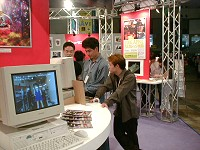

9月17日（金）幕張メッセにて開幕した「東京ゲームショウ '99秋」は、いよいよ18日（土）から一般公開。74社もの出展社が用意したおよそ450本にものぼる自信作が、ついに多くのファンの目に触れる時がやって来ました。
この日、開場前から幕張メッセを訪れた熱心なゲームファンは、2万1000人。長い列を作って開場を心待ちにする人々の熱意にこたえ、イベント事務局は予定を30分繰り上げて、9時30分に入場を開始。こうして「ショウ」の幕は、開かれました。
待ちに待った開場
そして、ファンの目前には、デジタル・テクノロジーを駆使した最先端のエンタテインメントの世界。デモムービーの上映に目を見はり、新作ゲームの体験プレイに胸を躍らせていました。
また多くのブースでは、ゲームに出演のタレントや声優のショウ、ミニコンサートなどのイベントを開催。多くのファンが、ステージと一体となって楽しむ姿が印象的でした。すべての娯楽や芸術とコミュニケーションを集約していく「コンピュータ・エンタテインメント」のパワーが実感されたことでしょう。

話題の新ハード、デモに見入る人々
|

来場者をわかせる、バラエティ風ソフトレビュー
|
今回の開催では、メインエントランスの東側に新スペース「ナビプラザ」を設置。従来のイベントステージ・めぐりあい広場・インフォメーションコーナーおよび来場者の休憩スペースをここに一体化しました。
この「ナビプラザ」には、パソコンで出展社情報を調べることができる検索システム、主催者からのお知らせ、イベントステージでのさまざまな催し、出展社ブースレポートの上映などを集約。情報と人の動きとを結び、出展社と来場者を結ぶ新しいコミュニケーションゾーンとして、行き交う来場者たちの待ち合わせや休憩に、またイベント上演中は出演者と観客の交歓にと、その機能をフルに発揮。

ブースレポートを生中継
前回に続いて、海外からの出展社として、韓国の「ゲーム総合支援センター」を迎えました。「世界第三のゲーム強国を目指す」韓国の、多くの企業が結集して開発・マーケティング・人材育成の強化をはかろうという団体です。
今回8社によって出品された10タイトルは、いずれもPC（Win）用。うち5本がネットワーク対応、さらにその中の2本はネットワーク専用と、日本と同様のネットワーク・ゲームへの関心の高さをうかがわせました。日本での発売が検討されているタイトルもあり、このもっとも近い隣国のゲームがわが国で親しまれる日も遠くはないことでしょう。
また好評のスクールコーナーは、今回は8校が出展。各校とも学生作品の試遊やアンケートの実施など工夫をこらし、明日のクリエイターを目指す若者たちを引き付けていました。
韓国発・赤ちゃん同士がアスレチックスで競うユニークなゲーム
|

「先輩」が直々に、自慢のソフトを説明
|
イベントステージでは17時から、一般公開日の恒例、各出展社提供の「CESAチャリティーオークション＆大抽選会」を開催。ゲーム関連レア・グッズの競売では、人気のアイテムにいきなり落札上限額の「2万円！」という声がかかるなど、白熱した競りあいが展開されました。
また今回は初めての試みとして、中学生以下のお子様を対象に、落札上限額を5000円に押さえた「キッズ・オークション」も盛り込まれました。これらの売上げはユニセフなどに寄付されます。
この「CESAチャリティーオークション＆大抽選会」は、19日（日）にも開催されます（16時から）。

同額の落札者同士、司会者とジャンケンポン
この日の入場者数は6万0499人と、大盛況のうちに終えた「東京ゲームショウ '99秋」一般公開日初日。来場者たちは、きっと誰もが自分の「スゴイ！」を発見し、その体験を多くの人々と共有することができたでしょう。
あす19日（日）は開催最終日、さらにいっそうの盛り上がりが見込まれます。
皆様、ぜひ東京ゲームショウにお越しください。